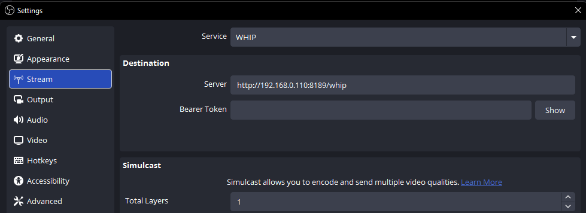
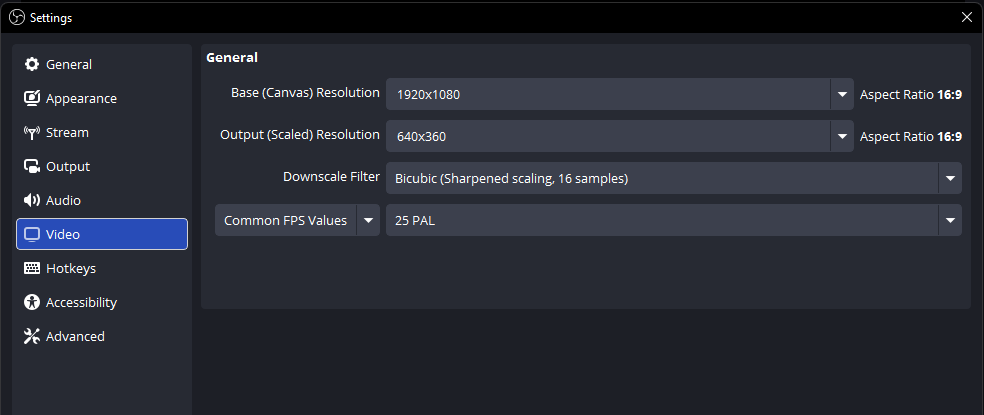
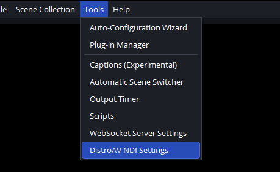
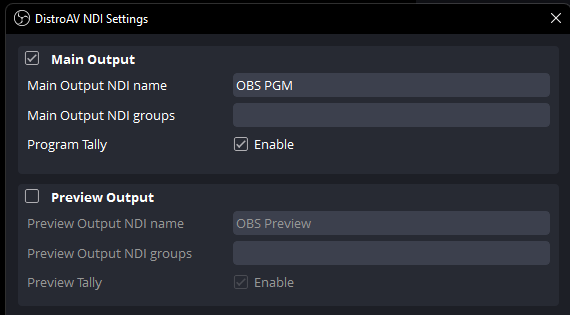

Video goes to the phone
OBS captures the picture from Unreal Engine, MotionBuilder, Blender, Roblox Studio, or a mixed scene. OBS then publishes its program output to Camera Motion Studio. The phone is the WHIP server, listening at a local URL such as http://<phone-ip>:8189/whip.
This is only a return viewfinder. Camera pose, lens, rigs, and buttons continue on their own FreeD, OSC, or WebSocket connection to the engine or DCC. The OBS picture can also be used without sending camera tracking anywhere.
WHIP is built into OBS Studio and the phone, with no extra PC plugin or phone SDK. NDI is an alternative when your build supports it and your local workflow benefits from it.
Prepare the phone
- Open Settings > View / Preview Input > Viewfinder modes and make sure OBS / WHIP is enabled. The setup wizard normally enables OBS for Unreal Engine, MotionBuilder, Blender, and Roblox Studio.
- Choose OBS in the viewfinder switch. The phone should show Listening on ... - waiting for OBS.
- Copy the WHIP URL displayed in View / Preview Input. The default listen port is
8189; use the displayed value if you changed it.

Publish OBS over WHIP
- In OBS, capture the window or scene the operator should see and make it the program output.
- Open Settings > Stream and select WHIP as the Service.
- Paste the phone's URL into Server, including the
/whippath. Leave Bearer Token blank; the phone does not use one. - Apply the settings and choose Start Streaming. The phone should change from waiting to connected and show the OBS picture.

OBS Studio's WHIP guide covers its current stream controls. Stop streaming in OBS, or leave OBS viewfinder mode on the phone, to end the return feed.
Balance response and clarity
The return picture can be docked or fullscreen with the app's camera controls over it. The phone shows round-trip-time and jitter-buffer statistics so you can inspect the link. Use these readings to help identify connection issues.
If the viewfinder feels slow, try a smaller Output (Scaled) Resolution and lower frame rate in OBS Settings > Video. A 640 x 360 output at 25 or 30 fps is a useful starting test; raise it if the picture needs more detail. If H264 decoding freezes or misbehaves on a particular phone, try VP9 under the app's Video codec setting.

Optional NDI viewfinder
NDI is a separate local-network input. It can add substantial phone CPU and battery load; compare the response on your own setup rather than assuming a lower latency than WHIP. NDI is not available in every app version. If NDI is absent from Viewfinder modes, use WHIP.
- Install a compatible DistroAV plugin and NDI runtime for OBS, then restart OBS.
- Choose Tools > DistroAV NDI Settings, enable Main Output, and give it a recognisable name.
- On the phone, enable NDI under Viewfinder modes, tap Refresh sources, select that output, and switch the viewfinder to NDI.


DistroAV's NDI output does not require the normal OBS Start Streaming command. The phone discovers it as a source on the local network. The phone picture and the pose stream are separate: confirm the selected input is OBS for WHIP or NDI for the discovered source.
Network and access limits
- Trusted LAN only: the phone's WHIP listener has no authentication. Anyone who can reach it while OBS mode is listening could publish a feed. Keep it on a network you trust.
- One publisher: a second WHIP publisher receives an HTTP
409while one session is connected. - Same local network: WHIP uses WebRTC over the LAN without a relay or STUN configuration here. Client-isolating Wi-Fi or firewall rules can block it.
- WHIP compatibility: the phone uses a non-trickle ICE answer; another publisher must accept the complete answer in one exchange.
- Video only: WHIP and NDI do not carry tracking pose, lens data, or OSC buttons.
The OBS viewfinder is available in both Lite and Pro. Lite's five-minute session limit applies to the phone's pose stream, not to this return picture.
Connection checks
- Waiting for OBS: select WHIP in OBS, paste the phone's full URL ending in
/whip, then start streaming. - OBS cannot connect: make sure OBS mode is selected on the phone, both devices share a LAN, the IP and port match, and the firewall allows the connection.
- Picture freezes: lower OBS resolution or frame rate, and try VP9 in the app if H264 is unstable on that phone.
- NDI source missing: verify that DistroAV Main Output is enabled, NDI is available in your app version, and source discovery works on the network.